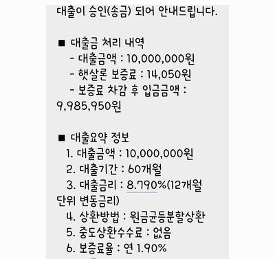

[직장인대출] 김인숙 과장님 고맙습니다.
재직형태 : 직장인
재직기간 : 3개월
사대보험 가입유무 : 유
소득 : 연 2100만원
신용등급 : 6등급
채무내역 : 2천6백만원
필요서류 : 주민등록 초본, 신분증, 건강보험 득실확인서, 건강보험 납부확인서, 통장 3개월 입출금 내역
급하게 가계자금이 필요하여 도움 신청하게 되었습니다.
기 대출금이 많아서 될까말까 많이 걱정했는데, 김인숙 과장님께서 끝까지
도와주셔서 대출받게 되었습니다.
정말 감사합니다.
